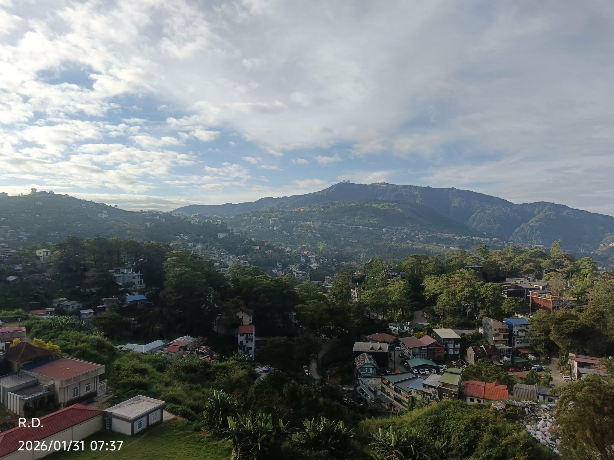

The horizon does not end at the peaks; it is the lip of the Great Basin of the Ancients, a valley formed by the footprint of a titan who once carried the stars. The houses clinging to the slopes are the barnacles of a civilization living upon a sleeping god, sheltered by a mist that is actually the titan's slow, cooling breath.
Atop the highest ridge stand the Needles of Aether, silver spires pinning our reality to the earth. Without them, the valley would drift upward to rejoin the constellations. Below, the forest acts as a verdant army, a silent vanguard of trees slowly reclaiming the stone and timber borrowed by men.
The light breaking through the clouds is the Blade of Radiance, a daily celestial seal. I stand on this precipice as the Silent Sentinel; my gaze alone keeps the mountains still and the giants beneath them at rest. If I turn away, the titan wakes, and the world begins anew.